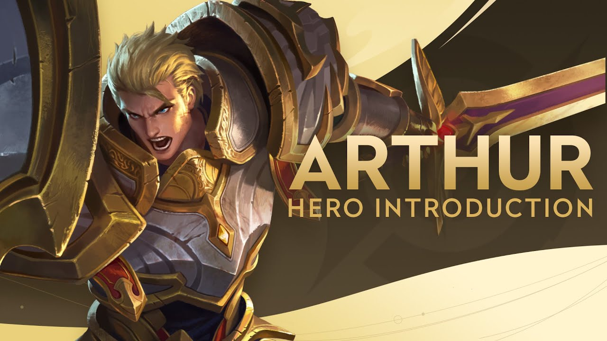
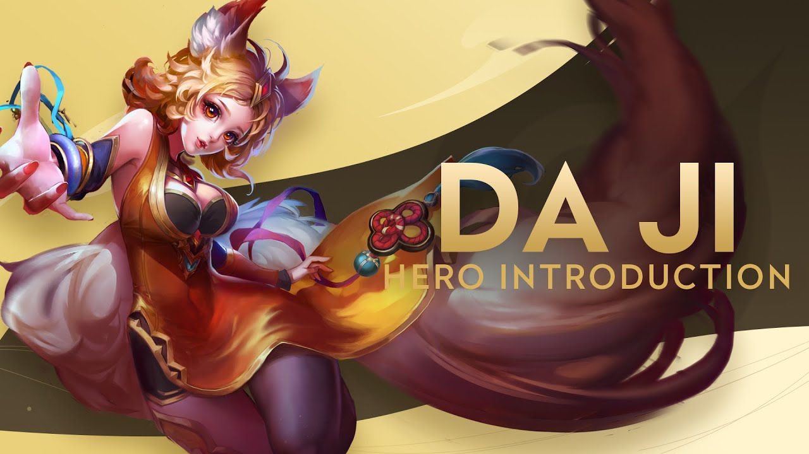

Arthur is a formidable hero who excels in both offense and defense.
His skills make him a valuable asset to any team, and he can easily turn the tide of a battle in his favor.
You can play him as Fighter or Tank. Arthur have three skills
First Passive Skill: Holy Vanguard
Skill 1: Valiant Charge
Skill 2: Whirling Strike
Ultimate: Might of Excalibur

Da Ji, also known as the Fox Spirit,
is a powerful mage in Honor of Kings.
A puppet devoid of emotions who was created by an old man proficient in sorcery,
Daji is an unparalleled beauty. Even though she was created as a puppet,
she looks no different from ordinary humans,
but Daji, who lacks an actual heart, can't understand human emotions.
Full of innocence and purity, she feels vexed and confused about her feelings.
Though her seductive appearance often makes her enemies forget just how dangerous she actually is,
the ignorant Daji's greatest desire was to discover her own heart.

The ancient immortal archer and husband of Chang'e.
When China was beset with nine suns scorching the land,
Hou Yi was called in to do something about it.
He used his bow to shoot down all 8 suns and left one alone,
restoring the heat level of China. Unfortunately,
those suns were the sons of the Jade Emperor of that time,
Di Jun, and so Hou Yi was punished by being stripped of his immortality along with Chang'e's.
Hou Yi managed to procure the elixir of immortality, but Chang'e ended up drinking it in dire need without him,
separating them forever. Hou Yi then spent the rest of his life alone,
with some sources stating that he ended up as a tyrant without Chang'e by his side and eventually slain by one of his students.
Honor of Kings
Activity 6h - Timetable For Semester September 2023
Back to TOP